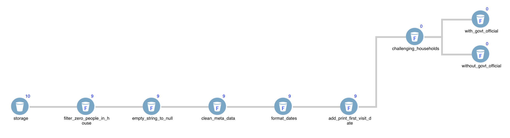
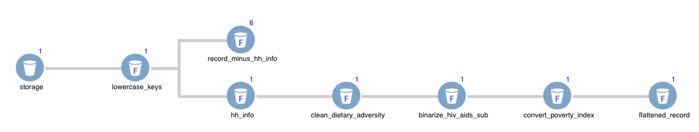
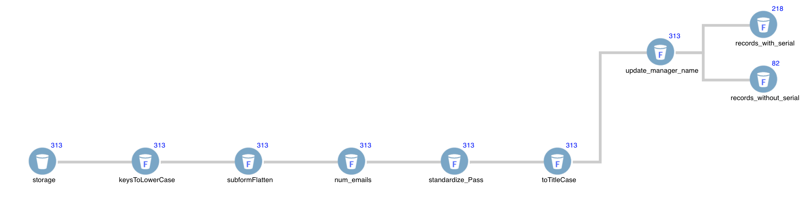

Requirements
- Filter out records where the number of people in the household is zero
- Convert empty strings to null
- Delete parent_element_id, parent_page_id, parent_record_id if they equal 0
- Change created_date, modified_date, and server_modified_date to YYYY-MM-DD HH:mm:ss format
- Create a new key/value pair called 'print_first_visit_date' with the format M/D/YY based on 'clts_first_visit_date'
- Create branch for challenging households
- Within challenging households, create two branches. One branch for government officials and the other for none
Mock Solution
Requirements
- Use dataflow.toKeysLowerCase(record) to convert all keys to lower-case
- Create two branches (hh_info subform & remainder of the record)
- Flatten hh_info by creating a new RecordSet and putting record.hh_info in the Transform Return
- Delete record.hh_info in second branch
- In record.dietary_diversity, convert "1" and "0" to numeric data-type
- In record.hiv_aids_sub, convert "yes" to 1 and "no" to 0
- In record.progress_out_of_poverty_index, convert all values that are numbers to numeric data-type
- Flatten the remaining data using dataflow.flatteniFormSubformObject(record)
Mock Solution
Requirements
- Use dataflow.flatteniFormSubformObject(record) to flatten each record
- Standardize all the keys to lowercase using dataflow.toKeysLowerCase()
- Count number of email addresses in record.send_email_to_ and assign it to a new property called record.num_emails
- Convert 'pass' to 'Pass'
- Capitalize first letter of manager_first_name and manager_last_name
- Update manager_name to reflect changes
- Filter out records with no serial number available
- Split model__value based on hyphen
Mock Solution
Requirements
- TBD
- TBD
- TBD